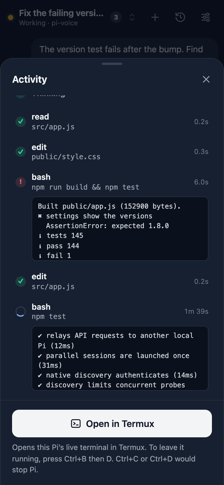

Live activity
See exactly what Pi is doing
Every tool call as it happens: the command, how long it took and its latest output. Watch the reply being written, and when you need the full picture, jump straight into Pi's terminal in Termux.
- Live output from running commands
- Failed steps stand out at a glance
- One tap to Pi's real terminal
